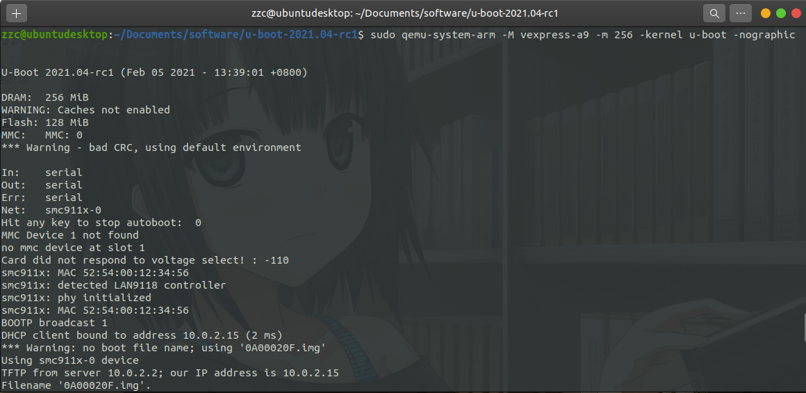
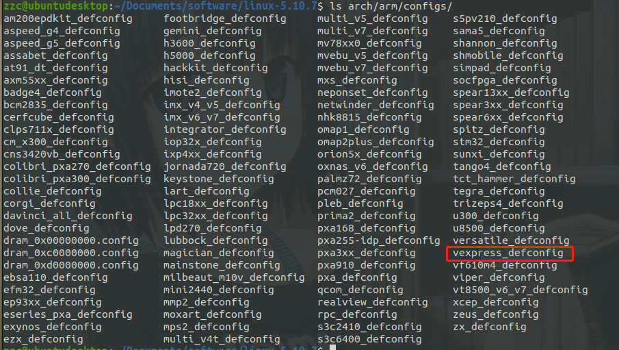
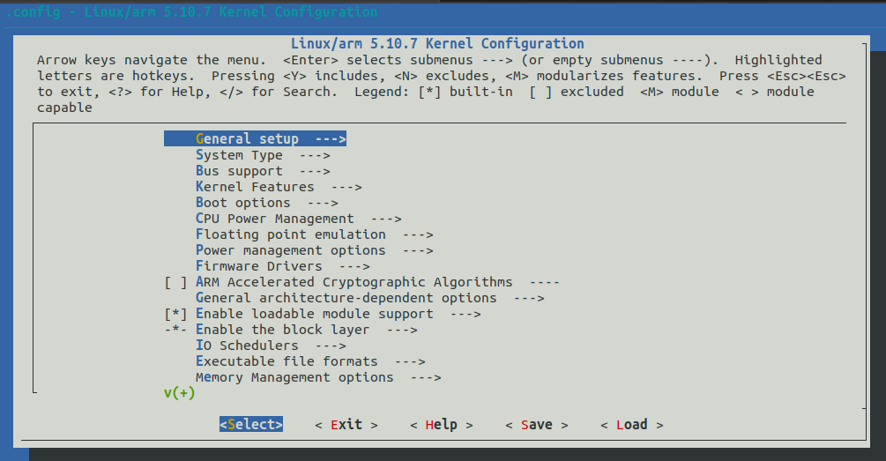
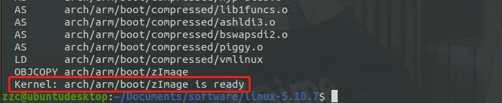
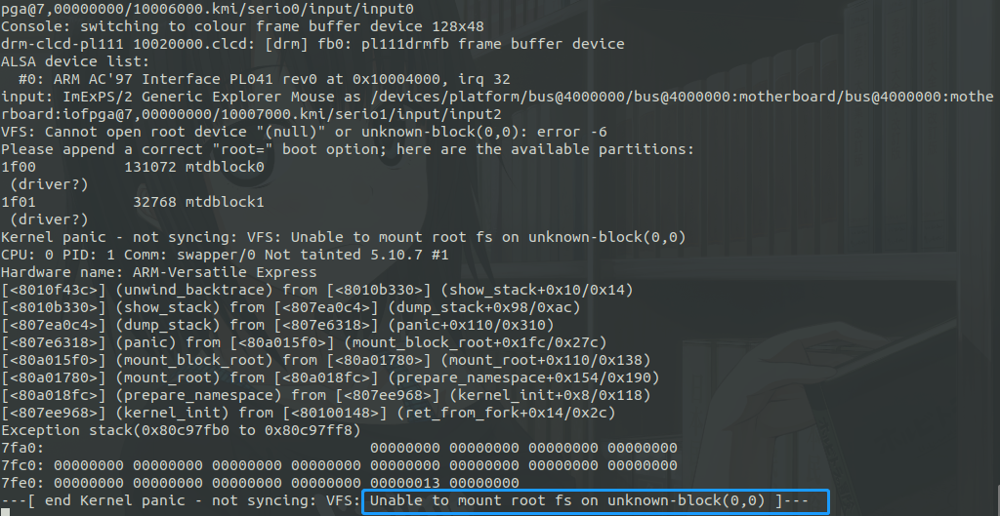
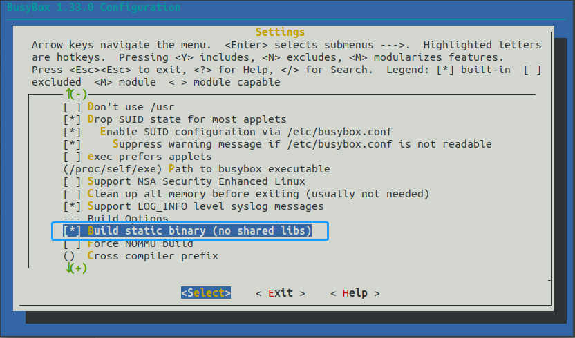
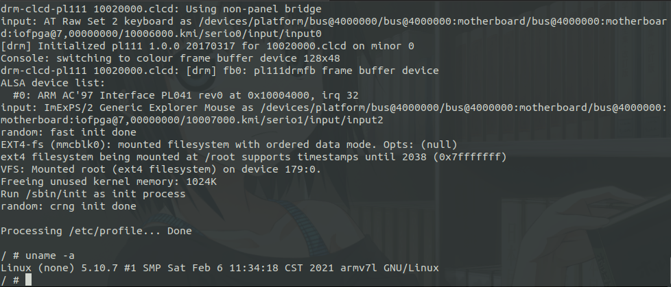
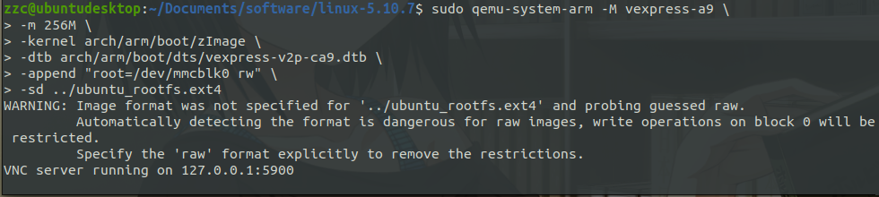
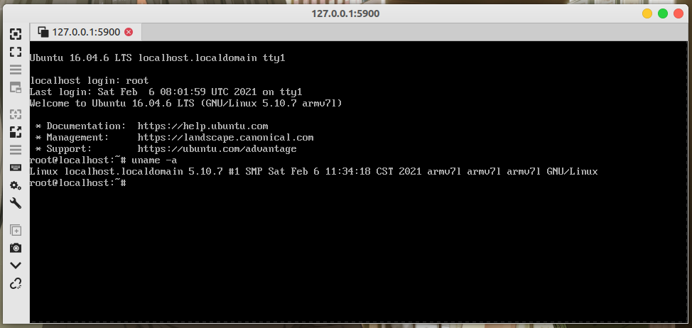
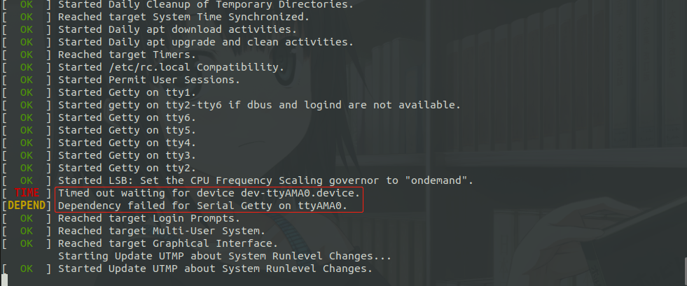

QEMU 进行 Arm 仿真开发
[toc]
前言
什么是 QEMU
QEMU 是一套由法布里斯·贝拉(Fabrice Bellard)所编写的以GPL许可证分发源码的模拟处理器，在 GNU/Linux 平台上使用广泛。Bochs，PearPC 等与其类似，但不具备其许多特性，比如高速度及跨平台的特性，通过 KQEMU 这个闭源的加速器，QEMU 能模拟至接近真实电脑的速度。0.9.1 及之前版本的 qemu 可以使用 kqemu 加速器。在 qemu1.0 之后的版本，都无法使用 kqemu，主要利用 qemu-kvm 加速模块，并且加速效果以及稳定性明显比 kqemu 好。（摘自百度百科）
为什么要用 QEMU
因为穷，所以只能玩模拟器咯
主机平台 Ubuntu 20.04
安装 QEMU
包管理器安装
直接 apt 安装，模拟 Arm 就直接安装 qemu-system-arm 就行；也可以 sudo apt install qemu-system 安装全部模拟环境
sudo apt update && sudo apt install qemu-system-arm -y
源码安装
包管理器可以安装，为什么还要这么麻烦使用源码安装呢？这样更有逼格？当然不是，因为包管理器的版本可能会比较老。
安装编译源码需要的环境
sudo apt install build-essential pkg-config zlib1g-dev libglib2.0-0 \
libglib2.0-dev libsdl1.2-dev libpixman-1-dev libfdt-dev autoconf \
automake libtool librbd-dev libaio-dev flex bison ninja-build
下载源码
编译安装
tar xf qemu-5.2.0-rc4.tar.xz
cd qemu-5.2.0-rc4/
# --target-list选择目标机器的架构;默认是将所有的架构都编译;可通过./configure --help查看支持的架构
./configure --target-list=arm-softmmu
# 根据自己CPU选择合适的数字
make -j4
sudo make install
测试安装是否成功
qemu-system-arm --version
# 成功输出
QEMU emulator version 5.1.94
Copyright (c) 2003-2020 Fabrice Bellard and the QEMU Project developers
安装交叉编译工具链
包管理器安装
sudo apt install gcc-arm-linux-gnueabihf
sudo apt install g++-arm-linux-gnueabihf
linaro 安装
https://releases.linaro.org/components/toolchain/binaries/
编译 uboot 并仿真
下载源码
https://ftp.denx.de/pub/u-boot/
编译
查看编译配置
ls configs/
这里我们选择 vexpress_ca9x4_defconfig
make vexpress_ca9x4_defconfig
# 指定编译器为 arm-linux-gnueabihf-
make ARCH=arm CROSS_COMPILE=arm-linux-gnueabihf- -j4
仿真
qemu-system-arm -M vexpress-a9 -m 256 -kernel u-boot -nographic

按Ctrl+Shift+a 后按 x退出 qemu
编译内核并仿真
编译内核可以参考另一篇文章 《Linux_x86_64 内核编译》
下载源码
我这里下载的是 5.10.7
编译
解压
tar xvf linux-5.10.7.tar.xz
cd linux-5.10.7/
查看编译帮助
make ARCH=arm help
查看配置
编译帮助里面也可以看到配置
ls arch/arm/configs/

配置
make ARCH=arm vexpress_defconfig
# 可选，上一步执行之后一般默认就行
make ARCH=arm menuconfig

编译
make ARCH=arm CROSS_COMPILE=arm-linux-gnueabihf- -j4
编译完成

仿真
qemu-system-arm -M vexpress-a9 \
-m 256M \
-kernel arch/arm/boot/zImage \
-dtb arch/arm/boot/dts/vexpress-v2p-ca9.dtb \
-nographic
会停在加载文件系统那里

busybox 制作rootfs 并仿真
下载源码
编译
配置
make ARCH=arm defconfig
make ARCH=arm menuconfig
勾选 Settings -> Build static binary

编译
make ARCH=arm CROSS_COMPILE=arm-linux-gnueabihf- -j4
仿真
制作镜像文件
在 busybox 目录下建立如下 shell 文件
#!/bin/sh
tmpfs=/_tmpfs
# 如果存在删除
sudo rm -rf rootfs
sudo rm -rf ${tmpfs}
sudo rm -f rootfs.ext4
sudo mkdir rootfs
# 拷贝 _install 中文件 到 rootfs
sudo cp _install/* rootfs/ -raf
cd rootfs && sudo mkdir -p lib proc sys tmp root var mnt && cd ..
sudo cp examples/bootfloppy/etc rootfs/ -arf
sudo sed -r "/askfirst/ s/.*/::respawn:-\/bin\/sh/" rootfs/etc/inittab -i
sudo mkdir -p rootfs/dev/
sudo mknod rootfs/dev/tty1 c 4 1
sudo mknod rootfs/dev/tty2 c 4 2pro
sudo mknod rootfs/dev/tty3 c 4 3
sudo mknod rootfs/dev/tty4 c 4 4
sudo mknod rootfs/dev/console c 5 1
sudo mknod rootfs/dev/null c 1 3
sudo dd if=/dev/zero of=rootfs.ext4 bs=1M count=128
sudo mkfs.ext4 rootfs.ext4
sudo mkdir -p ${tmpfs}
sudo chmod 777 ${tmpfs}
sudo mount rootfs.ext4 ${tmpfs}/
sudo cp -r rootfs/* ${tmpfs}/
sudo umount ${tmpfs}
sudo rm -rf ${tmpfs}
仿真
注意自己文件存放位置
sudo qemu-system-arm -M vexpress-a9 \
-m 256M \
-kernel arch/arm/boot/zImage \
-dtb arch/arm/boot/dts/vexpress-v2p-ca9.dtb \
-nographic \
-append "root=/dev/mmcblk0 rw console=ttyAMA0" \
-sd ../busybox-1.33.0/rootfs.ext4

使用 Ubuntu rootfs
下载
http://cdimage.ubuntu.com/ubuntu-base/releases/
这里下载的是 16.04-armhf
制作为镜像文件
在下载下来的压缩文件目录下，使用以下脚本
#!/bin/bash
xdir='/tmp/sdir'
mdir='/tmp/mdir'
rootfs='ubuntu_rootfs.ext4'
sudo rm -f $rootfs
sudo rm -rf $xdir
sudo rm -rf $mdir
mkdir -p $xdir $mdir
# 根据实际情况指定文件
sudo tar -xf ubuntu-base-16.04.6-base-armhf.tar.gz -C $xdir/
dd if=/dev/zero of="$rootfs" bs=1M count=256
sudo mkfs.ext4 $rootfs
sudo mount $rootfs $mdir/
sudo cp -arf $xdir/* $mdir/
# 去掉 root 登录密码
sudo sed -i 's/root:x:0:0:root:/root::0:0:root:/' $mdir/etc/passwd
sudo umount $mdir/
sudo rm -rf $xdir
sudo rm -rf $mdir
printf "创建 %s%s 成功\n\n" "$(pwd)" $rootfs
exit 0
仿真
sudo qemu-system-arm -M vexpress-a9 \
-m 256M \
-kernel arch/arm/boot/zImage \
-dtb arch/arm/boot/dts/vexpress-v2p-ca9.dtb \
-append "root=/dev/mmcblk0 rw" \
-sd ../ubuntu_rootfs.ext4

使用 Remmina 连上取可以登录系统

不知道为什么；这里用之前的方式会启动失败
sudo qemu-system-arm -M vexpress-a9 \
-m 256M \
-kernel arch/arm/boot/zImage \
-dtb arch/arm/boot/dts/vexpress-v2p-ca9.dtb \
-nographic \
-append "root=/dev/mmcblk0 rw console=ttyAMA0" \
-sd ../ubuntu_rootfs.ext4
失败错误如下

参考文献
由于个人水平有限，文中若有不合理或不正确的地方欢迎指出改正